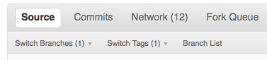

Development workflow¶
You already have your own forked copy of the nipype repository, by following Making your own copy (fork) of nipype, Set up your fork, and you have configured git by following Configure git.
Workflow summary¶
- Keep your
masterbranch clean of edits that have not been merged to the main nipype development repo. Yourmasterthen will follow the main nipype repository. - Start a new feature branch for each set of edits that you do.
- If you can avoid it, try not to merge other branches into your feature branch while you are working.
- Ask for review!
This way of working really helps to keep work well organized, and in keeping history as clear as possible.
See — for example — linux git workflow.
Making a new feature branch¶
git branch my-new-feature
git checkout my-new-feature
Generally, you will want to keep this also on your public github fork
of nipype. To do this, you git push this new branch up to your github
repo. Generally (if you followed the instructions in these pages, and
by default), git will have a link to your github repo, called
origin. You push up to your own repo on github with:
git push origin my-new-feature
In git >1.7 you can ensure that the link is correctly set by using the
--set-upstream option:
git push --set-upstream origin my-new-feature
From now on git will know that my-new-feature is related to the
my-new-feature branch in the github repo.
The editing workflow¶
Overview¶
# hack hack
git add my_new_file
git commit -am 'NF - some message'
git push
In more detail¶
Make some changes
See which files have changed with
git status(see git status). You’ll see a listing like this one:# On branch ny-new-feature # Changed but not updated: # (use "git add <file>..." to update what will be committed) # (use "git checkout -- <file>..." to discard changes in working directory) # # modified: README # # Untracked files: # (use "git add <file>..." to include in what will be committed) # # INSTALL no changes added to commit (use "git add" and/or "git commit -a")
Check what the actual changes are with
git diff(git diff).Add any new files to version control
git add new_file_name(see git add).To commit all modified files into the local copy of your repo,, do
git commit -am 'A commit message'. Note the-amoptions tocommit. Themflag just signals that you’re going to type a message on the command line. Theaflag — you can just take on faith — or see why the -a flag? — and the helpful use-case description in the tangled working copy problem. The git commit manual page might also be useful.To push the changes up to your forked repo on github, do a
git push(see git push).
Asking for code review¶
Go to your repo URL — e.g.
http://github.com/your-user-name/nipype.Click on the Branch list button:
Click on the Compare button for your feature branch — here
my-new-feature:
If asked, select the base and comparison branch names you want to compare. Usually these will be
masterandmy-new-feature(where that is your feature branch name).At this point you should get a nice summary of the changes. Copy the URL for this, and post it to the nipype mailing list, asking for review. The URL will look something like:
http://github.com/your-user-name/nipype/compare/master...my-new-feature. There’s an example at http://github.com/matthew-brett/nipy/compare/master…find-install-data See: http://github.com/blog/612-introducing-github-compare-view for more detail.
The generated comparison, is between your feature branch
my-new-feature, and the place in master from which you branched
my-new-feature. In other words, you can keep updating master
without interfering with the output from the comparison. More detail?
Note the three dots in the URL above (master...my-new-feature).
Two vs three dots
Imagine a series of commits A, B, C, D… Imagine that there are two branches, topic and master. You branched topic off master when master was at commit ‘E’. The graph of the commits looks like this:
A---B---C topic
/
D---E---F---G master
Then:
git diff master..topic
will output the difference from G to C (i.e. with effects of F and G), while:
git diff master...topic
would output just differences in the topic branch (i.e. only A, B, and C). [1]
Asking for your changes to be merged with the main repo¶
When you are ready to ask for the merge of your code:
Go to the URL of your forked repo, say
http://github.com/your-user-name/nipype.git.Click on the ‘Pull request’ button:

Enter a message; we suggest you select only
nipypeas the recipient. The message will go to the nipype mailing list. Please feel free to add others from the list as you like.
Merging from trunk¶
This updates your code from the upstream nipype github repo.
Overview¶
# go to your master branch
git checkout master
# pull changes from github
git fetch upstream
# merge from upstream
git merge upstream/master
In detail¶
We suggest that you do this only for your master branch, and leave
your ‘feature’ branches unmerged, to keep their history as clean as
possible. This makes code review easier:
git checkout master
Make sure you have done Linking your repository to the upstream repo.
Merge the upstream code into your current development by first pulling the upstream repo to a copy on your local machine:
git fetch upstream
then merging into your current branch:
git merge upstream/master
Deleting a branch on github¶
git checkout master
# delete branch locally
git branch -D my-unwanted-branch
# delete branch on github
git push origin :my-unwanted-branch
(Note the colon : before test-branch. See also:
http://github.com/guides/remove-a-remote-branch
Several people sharing a single repository¶
If you want to work on some stuff with other people, where you are all committing into the same repository, or even the same branch, then just share it via github.
First fork nipype into your account, as from Making your own copy (fork) of nipype.
Then, go to your forked repository github page, say
http://github.com/your-user-name/nipype
Click on the ‘Admin’ button, and add anyone else to the repo as a collaborator:
Now all those people can do:
git clone git@githhub.com:your-user-name/nipype.git
Remember that links starting with git@ use the ssh protocol and are
read-write; links starting with git:// are read-only.
Your collaborators can then commit directly into that repo with the usual:
git commit -am 'ENH - much better code'
git push origin master # pushes directly into your repo
Exploring your repository¶
To see a graphical representation of the repository branches and commits:
gitk --all
To see a linear list of commits for this branch:
git log
You can also look at the network graph visualizer for your github repo.
Footnotes
| [1] | Thanks to Yarik Halchenko for this explanation. |